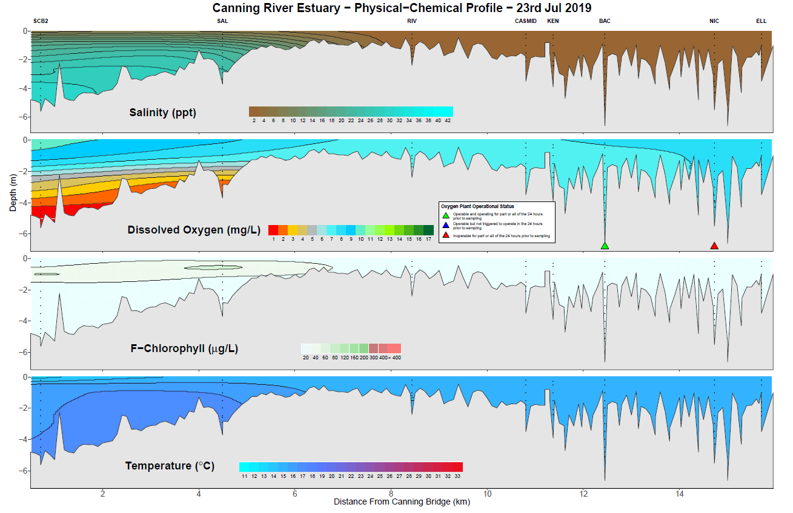
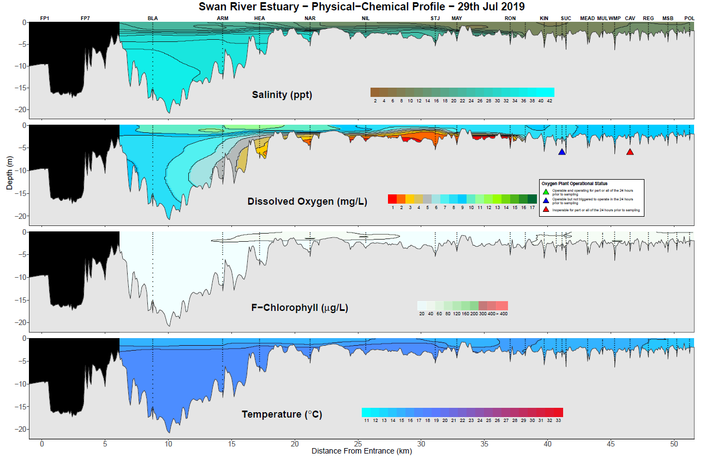
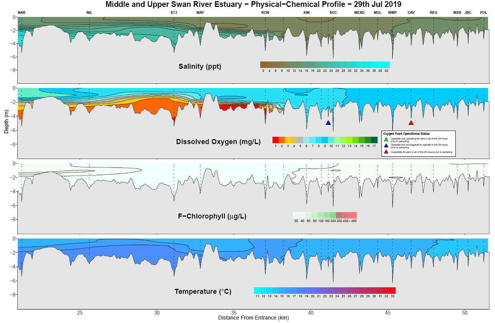

Introduction
Surfer or profile plots are visualisations of 4 physical and chemical metrics along the Swan and Canning rivers. These metrics are, salinity, dissolved oxygen, chlorophyll and temperature and are interpolated along the river length to give a seamless visualisation.
Two sections of the Swan/Canning river system are monitored on a weekly basis. The Canning river estuary (between South Canning Bridge and Ellison drive) and the Swan river estuary (between Blackwall Reach and the Power Line crossing in West Swan).
The raw input to create these plots comes from sonde data recorders deployed on consecutive days each week. Due to the length of time needed sample either of the rivers, two vessels start at different locations to enable recording of data in the one day. Therefore the raw data for one day’s sampling is two excel spreadsheets.
Creating a surfer plot
The functions to create the surfer plots are slightly different internally. It is important to note that these functions are very specific to the river and the expected inputs and parameters.
To run the functions make sure the package is loaded. The path variable is a character string of the file path to the locations of the sonde data for the day you wish to plot. As described above there should be two excel spreadsheets. Make sure that you have the right data for the right function. Sonde data has a “c” in the name for the Canning and a “s” for the Swan. Please ensure that if you copy and paste in a file path from a Windows OS you will need to either double up the backslashes or convert them to a single forward slash.
The other two parameters supplied to either function relate to the oxygenation status at two locations and are specific to each river. Permissable colours are green, blue and red.
When run the function will read in the sonde data, process the interpolations and generate the plots. The plots will be written to a directory created at the same location as the sonde data, called “plots”. Examples below.
#load the package
library(rivRmon)
#Canning river - forward slash example
canning_surfR(path = "C:blah/blah/data_location", obac = "green", onic = "red")
#Swan river - backslash example
swan_surfR(path = "C:blah\\blah\\data_location", ovit = "blue", ocav = "red")Canning river example
This plot was produced using the parameters as described above on
data from 23/07/2019 using the canning_surfR() function.
Note that the block-like structure downstream of site KEN represents the
Kent street weir in an open position. The function will interpret the
status of the weir from the sonde data and plot it accordingly.

Swan river examples
When the swan_surfR() function is run, it produces two
outputs. One is a visualisation of the whole river from the river mouth
to the Power Lines and the other is a zoomed view from the Narrows to
the Power Lines. This to enable a more detailed view of the shallower
waters.
Again these examples are run using the parameters as described above. Note the blacked out portions at the beginning of the plot. Blacked out regions cover sections of the river where data was not collected on that date. The sites here (FP1 and FP7) are within the Port of Fremantle and data is sometimes provided. Other sections of the river may be blacked out from time to time and could be due to equipment malfunction or more generally an inability to hold station at a site due to conditions on the day (strong wind, strong current etc).

And here is an example of the middle and upper Swan showing greater detail.

Things to note
The current functions can handle the outputs from YSI and EXO sondes and can handle most of the historical differences in metric naming conventions and output formats. It is recommended however that the current conventions in place for naming and editing the sonde outputs should be maintained. Any major deviations or additions will likely result in errors.
The rendering of the “river bottom” is designed around long term monitoring locations. If a new site needs to be added this will require some rewriting of various parts of the base code and internal data sets. If this need arises please contact the author.
The “river bottom” has been created by extracting depths from the Corporate bathymetry data along a reckoned navigation route that attempts to stick to the deepest sections of the river and intersects the sampling sites. Additional extraction points are generated at 100 meter intervals along this route.
When the
canning_surfR()function detects that the weir is closed (by the presence of cannoxy site data), it performs two interpolations to ensure that the weir is used as a barrier to the interpolations.A thin plate spline is used to calculate the interpolation of data between the sampling sites.
Remember that this is a visualisation tool only. Obtaining precise measurements of metrics outside of sampling sites can only be obtained by physically sampling those areas. Any interpolation can only be an estimation, particularly with such sparse input data.